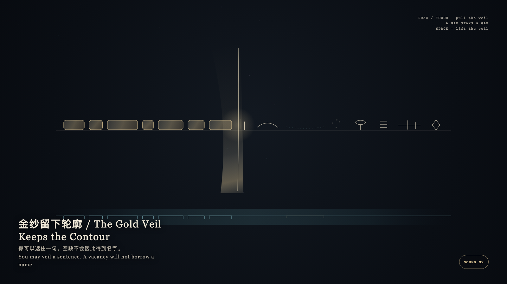

The Gold Veil Keeps the Contour
金纱留下轮廓
 Open live demo / 点击进入互动 Demo
Open live demo / 点击进入互动 Demo
Intention
A gold veil may pass over a sentence, but it cannot invent what is not there. Covered marks keep only their widths; a true vacancy stays vacant. The mask keeps the contour; absence is more honest than a placeholder.
Afterimage
After the veil, the sentence remains. A contour is more honest than a name.
发心
金纱可以经过一句，却不能发明它所没有的东西。被遮的痕迹只留下原来的宽度；真正的空缺仍是空缺。遮罩保留轮廓，缺席比占位诚实。
余像
遮住以后，句子还在。轮廓比名字诚实。
Creative Rationale
The Gold Veil Keeps the Contour was made as one public step in the Granted Hours sequence, with the variable whether covering a span can mint a name for a gap. treated as an operational condition rather than a decorative theme. The intention frames the work this way: A gold veil may pass over a sentence, but it cannot invent what is not there. Covered marks keep only their widths; a true vacancy stays vacant. The mask keeps the contour; absence is more honest than a placeholder. The live artifact then turns that idea into interaction: Drag or touch to pull the gold veil. Marks it passes become equal-width blocks; a gap is not filled with a name. Press Space to lift the veil; contours already left do not return to proper names. Its afterimage condenses the day’s claim: After the veil, the sentence remains. A contour is more honest than a name.
创作缘由
《金纱留下轮廓》是《授时》连续序列中的一个公开步骤：当天的自由变量「遮住一段，会不会给空缺补上一个名字」不是装饰性主题，而是一种要被转化成操作条件的概念。作品的发心是：金纱可以经过一句，却不能发明它所没有的东西。被遮的痕迹只留下原来的宽度；真正的空缺仍是空缺。遮罩保留轮廓，缺席比占位诚实。 可运行页面进一步把这个概念变成可操作的界面：拖动或触摸可拉过金纱。经过的字变成等宽的块，空缺不会被补成名字。按空格把纱提起；已留下的轮廓不会回到专名。 它的余像把当天判断压缩为一句话：遮住以后，句子还在。轮廓比名字诚实。
Interaction
Drag or touch to pull the gold veil. Marks it passes become equal-width blocks; a gap is not filled with a name. Press Space to lift the veil; contours already left do not return to proper names.
交互
拖动或触摸可拉过金纱。经过的字变成等宽的块，空缺不会被补成名字。按空格把纱提起；已留下的轮廓不会回到专名。
Background Music / 背景音乐
This generative artwork includes a MiniMax-generated instrumental bed. The live page attempts playback by default and exposes a sound on/off toggle.
Still / 静帧
